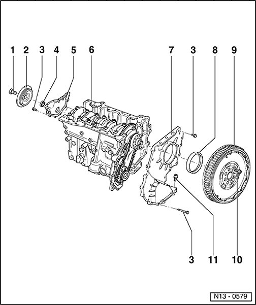

Timing Cover: Service and Repair
Sealing Flange, Assembly Overview

1 - 100 Nm + 1 / 2 turn (180 degree )
- Replace
- Use counter-holder tool T10069 for loosening and tightening
- Tighten using torque wrench V.A.G 1601
2 - Vibration damper
- Removing and installing ribbed belt Ribbed Belt .
3 - 10 Nm
4 - Seal
- Replacing
5 - Sealing flange
- Coat sealing surfaces with sealant D 176 501 A1
6 - Cylinder block
- Removing and installing crankshaft
- Piston and connecting rod, disassembling and assembling
7 - Sealing flange
- Coat sealing surfaces with sealant D 176 501 A1
8 - Seal
- Remove using pulling hook T20143/2
- PTFE version of oil seal
- Identification: no inner coil spring
- Do not additionally oil or grease sealing lip of oil seal
- Before installing, remove oil remains from crankshaft journal with a clean cloth
- Replacing Oil Seal, Flywheel Side .
9 - Dual mass flywheel/drive plate
10 - 60 Nm + 1 / 4 turn (90 degree )
- Replace
- To loosen or tighten, use counter-hold T10044 (with 5 mm spacers), or counter-hold T10069 .
11 - 25 Nm